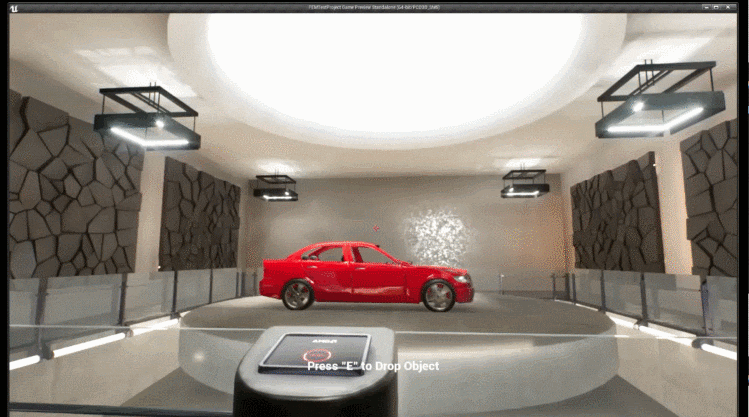

限元变形材料虚幻插件
FEMFX 是一个用于变形材料物理的多线程 CPU 库，使用有限元法 (Finite Element Method, FEM)。实体对象表示为四面体单元的网格，每个单元都具有控制刚度、体积如何随变形变化以及发生断裂或塑性（永久）变形的应力限制的材料参数。该模型支持多种材料以及材料之间的相互作用。我们打算让这些功能补充而不是取代传统的刚体物理。该系统的设计考虑了以下因素：
- 保真度：看起来逼真的木材、金属、塑料，甚至玻璃，因为它们像真实材料一样根据压力弯曲和断裂。
- 变形效果：非刚性用例，例如软体物体、弯曲或扭曲的物体。这不仅仅是一种视觉效果，而且材料会抵抗或推回其他物体。
- 动态更改材质：您可以更改设置以使同一对象的行为截然不同，例如变成凝胶状或融化
- 游戏或谜题的有趣物理交互
该库使用广泛的多线程来利用多核 CPU，并从 CPU 核心数量增加的趋势中受益。
